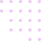
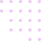

Futurannet
Design.
Transformando sua marca em um potencial maior !
Mostre ao mundo sua marca com sites modernos elegantes e rápidos.
Saiba mais Transformando sua marca em um potencial maior !
Mostre ao mundo sua marca com sites modernos elegantes e rápidos.
Saiba mais Ter um site é ter um cartão de visitas digital !
Quando você desenvolve um site, está criando, na verdade, um cartão de visitas digital. Afinal, é por meio dele que o cliente pode conhecer mais sobre a sua empresa e conferir informações relevantes sobre o negócio. Quais são os produtos vendidos? Qual é a sua especialidade? Tudo isso deve estar presente no seu site.
Saiba maisConstruir credibilidade !
O site também é uma maneira de construir credibilidade para a sua marca. O usuário passa a entender quem são as pessoas por trás daquele , a forma como as operações são feitas, en fim, é uma forma de apresentar a sua empresa. Um site bem feito passa a mensagem de seriedade e de preocupação com as mínimas experiências
Saiba mais
Marcar presença online 24 horas !
Quando a sua marca tem um site, isso significa que ela está presente para o seu público 24 horas por dia durante os sete dias da semana. Ao adicionar um chatbot, por exemplo, o usuário pode ter contato mesmo em horários fora do expediente da sua equipe. Essa é uma maneira de oferecer mais comodidade e melhorar a experiência de cada visitante.
Saiba maisTudo em uma página